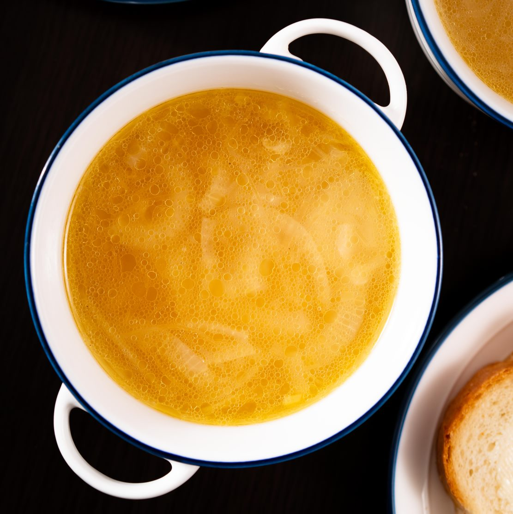

French Onion Soup

How to make French Onion Soup
There are few dishes that burst with as much satisfying savoury flavour with so very little effort! All you need for the quintessential delicious onion soup is a few everyday household staples, an onion, and half an hour!
Start with your onion. I prefer to slice mine into long, thing crescents, but you are welcome to slice yours up however you like. Fry until turning brown and sticking to your pan, then deglaze with a splosh of wine - there is little in life as satisfying as the sizzle of wine slooshed over onions! Simmer in vegetable broth til the onions are glassy and soft, then serve up with cheesey croutons!
Ingredients
- One large onion
- A medium-sized glass of white wine
- 500ml vegetable stock
- 1 tbsp olive oil (for frying)
- Salt and pepper to taste
Method
- Peel, then slice your onion in half. Cut the onion into long thin crescents.
- Heat olive oil in a small saucepan over a medium heat. Add onion, and fry until browning, stirring occasionally.
- Once the onions are browning nicely, add the white wine. Stir to deglaze - any onion stuck to the pan should come off nicely.
- Once the alcohol has evaporated off (you should be able to tell by sniffing the steam coming off the onions - if there's still alcohol left to evaporate, you will know it!), add your vegetable stock. Simmer over a medium low heat for 15 minutes, or until the onion is tender.
- Season with salt and pepper to taste, then serve with crusty French bread and butter.